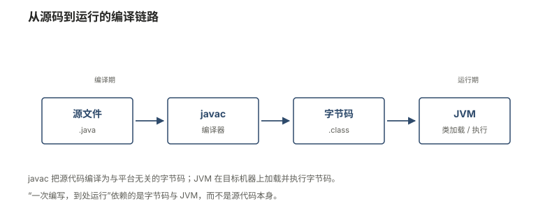

SOE102 · 第 1 章
Java 入门与开发环境
Introduction to Java & IDE
虚线下划线为术语；悬停查看中文、英文与释义，完整词典见“术语”。
本章目录
本讲从“计算机是什么”出发，建立位与字节、二进制换算、高低级语言与 JVM 的基本图景，然后写出第一个 Java 程序，并在 IntelliJ IDEA 中创建、运行和调试它。
本章要点
- 计算机按“输入 → 处理 → 输出 → 存储”工作，程序是告诉计算机做什么的指令集合。
- 1 bit 是一位二进制数，8 bit = 1 byte；n 位可表示 2n 种组合。
- 二进制与十进制可以按位权互相换算，讲义用 10110110 与 121 各演示一次。
- 语言分为二进制、汇编（低级）与 Java/C#（高级）三层，一条高级指令可能对应多条低级指令。
- JVM 把 Java 字节码翻译成各操作系统自己的指令，因此同一份 Java 程序可以跨平台运行。
- Java 用 int 表示整数、double 表示小数、String 表示文本、boolean 表示真假。
- 一个完整程序由 package、class、main 方法、语句与成对的花括号组成，每条语句以分号结束。
- IntelliJ IDEA 负责创建项目、编译、运行与断点调试，输出显示在底部面板。
1.1 计算机、程序与编译器
讲义先把计算机拆成四个动作：接收某种输入数据input data、处理数据、产生某种输出（信息）、存储数据；整个过程中它被一个或多个程序控制。程序则是“告诉计算机究竟该做什么”的一组指令，用人类可读写的语言写成，例如 Java 或 C#。
人写的源码不能直接被机器执行。编译器compiler把源码转换成可执行的字节码（bytecode），计算机才能读写它。讲义强调，不同操作系统需要由不同语言产出的不同可执行文件：iPhone 的 iOS 应用用 Objective-C 写，Android 应用用 Java 写。这意味着同一个程序常常要准备好几个版本，而 Java 程序理论上可以跑在所有计算机上——原因在 1.4 节的 JVM。
W1 slide 30–33
1.2 位、字节与二进制
对现代计算机来说，一切都是二进制。1 位bit 就是 1 个二进制数位，取值 0 或 1，对应电路的 ON 与 OFF。每增加一位，可表示的总量翻倍：1 位 2 种、2 位 4 种、3 位 8 种、4 位 16 种、5 位 32 种、6 位 64 种、7 位 128 种、8 位 256 种。数学表达是：n 位产生 2n 种模式。
| 位数 | 取值 | 不同取值个数 |
|---|---|---|
| 1 bit | 0, 1 | 2 |
| 2 bits | 00, 01, 10, 11 | 4 |
| 3 bits | 000 至 111 | 8 |
| 8 bits | 00000000 至 11111111 | 256 |
8 位称为 1 个字节byte，通常正好存放 1 个字符（如 “a”）。往上按 1024 进位：1024 bytes = 1 kilobyte（几段文字），1024 KB = 1 Megabyte（约 200 页文本），1024 MB = 1 Gigabyte（256 个 MP3），1024 GB = 1 Terabyte（40 部大电影）。位数越多，能存的东西越多：指令更长、数据更多、文件质量更好。
W1 slide 36–39
1.3 二进制与十进制的换算
换算的工具是一张位权表：从右到左依次是 20=1、21=2、22=4、23=8、24=16、25=32、26=64、27=128。二进制转十进制就是“把为 1 的那些位权加起来”。讲义用 10110110 演示：
| 位权 | 27 | 26 | 25 | 24 | 23 | 22 | 21 | 20 |
|---|---|---|---|---|---|---|---|---|
| 十进制值 | 128 | 64 | 32 | 16 | 8 | 4 | 2 | 1 |
| 二进制位 | 1 | 0 | 1 | 1 | 0 | 1 | 1 | 0 |
把为 1 的位权相加：128 + 32 + 16 + 4 + 2 = 182，所以 10110110 = 182。讲义逐位写出乘积（0×20=0、1×21=2、1×22=4、0×23=0、1×24=16、1×25=32、0×26=0、1×27=128）再求和，结果相同。
反方向（十进制转二进制）讲义用“从高位开始试减”的方法，把 121 转成二进制：27=128 大于 121，该位记 0，余数仍为 121；26=64 ≤ 121，记 1，余数 121−64=57；25=32 ≤ 57，记 1，余数 25；24=16 ≤ 25，记 1，余数 9；23=8 ≤ 9，记 1，余数 1；22=4 与 21=2 都大于 1，两位记 0；20=1 ≤ 1，记 1，余数 0。于是 121 = 01111001。
讲义还用位深解释图像与游戏机：1 bit 只有黑白，位深越高越能通过混合得到灰阶与彩色；1980 年代 NES 是 8 位主机、54 色，SNES 是 16 位、256 色，PlayStation 是 32 位、16,777,216 色。
W1 slide 40–58
1.4 从机器码到高级语言，再到 JVM
计算机只认二进制，但人不能在 0 和 1 的洪流里编程，因此语言分层。最低层是二进制（如 1000110100111010100100100111）；往上是汇编语言assembly language，指令极简单（加、减、复制、删除），一条命令后跟数值，直接操作内存与寄存器，例如 TAD I Z STPTR、SNA、HLT、TLS；它比二进制好写，但仍然难读——讲义的原话是 “Difficult to read and follow!”。
再往上是高级语言high-level language：语法接近英语，人容易读、容易写，种类很多（Java、C、C#、C++、Python）。代价是抽象：一条高级指令可能被翻译成好几条低级指令。讲义用同一件事对比三种写法——二进制一长串 0/1、汇编四行助记符、Java 一行 System.out.println("Hello World!");。
那么 Java 程序为什么能跑在 Windows、macOS、Unix、Linux 上？因为每个操作系统都有自己的 Java 虚拟机Java Virtual Machine, JVM——“运行在真实 PC 里的虚拟 PC”。JVM 把 Java 指令翻译成该操作系统自己的指令，并能运行用 Java 写出的字节码。讲义把这套机制概括为：源码 → 字节码 → 各平台 JVM → 本机指令。

绘图提示词
Clean vector flow diagram, left to right: a source file box labelled HelloWorld.java, an arrow labelled compiler, a bytecode box labelled HelloWorld.class, then three parallel branches into three JVM boxes labelled Windows JVM, macOS JVM and Linux JVM, each with an arrow to a matching native machine. Flat 2D, thin 1.5 px strokes, muted slate blue and warm grey palette, white background, English labels, no cartoon, no gradient, no shadow.
W1 slide 59–69
1.5 数据、变量与第一个 Java 程序
讲义把程序拆成两半：数据，以及处理数据的指令。数据用变量（variable）与常量（constant）谈论，指令用方法与函数（method / function）谈论。数据存在内存里，我们把数据赋给一个变量：x = 8;、y = 4;。
所有数字数据在机器里都是二进制，那么 1000110110001 到底是什么意思？取决于上下文——它可能是数字、文本、图像、mp3。这正是数据类型data type存在的原因：告诉计算机该如何处理这段数据。讲义先用一段伪代码（不是 Java）演示“声明 → 赋值 → 计算 → 输出”四步：
//Declare the data:
Number number1;
Number number2;
Number answer;
//Input values:
number1 = 10;
number2 = 7;
//Process data:
answer = number1 + number2;
//Output answer:
print(answer);声明（declare）只说明类型与名字，此时变量还没有值；赋值（initialise，讲义写作 initialising）才把 10 交给 number1。同样的四步换成 Java，整数用 int，小数用 double：
int number1;
int number2;
int answer;
number1 = 7;
number2 = 12;
answer = number1 + number2;
System.out.println("Answer = " + answer);除法要用 double 才有小数结果：double number1 = 1.0;、double number2 = 2.0;、answer = number1 / number2;。讲义明确：整数（whole numbers）与小数（fractional numbers）在内存中的存法不同，所以数据类型也不同，主要两种是 int 与 double。
W1 slide 70–80
1.6 文本、布尔与转义字符
文本用 String 表示，这是最常见的方式：String myName = "Andy";。String 可以拼接，例如把 firstName 与 secondName 相加得到 fullName。讲义还提醒：String 的引号、变量名都要写对，漏分号或漏引号是最常见的错误。
真假值用 boolean，只有 true / false 两个取值，本质是二进制数据，除此之外什么都存不了，非常适合检查条件是否满足：boolean bool = false;、boolean labThisWeek = true;。它的长度是可变的：只用到 1 bit，却可能占用多达 32 bit 的内存。
想在字符串里放特殊字符，需要转义字符escape character，即在前面加反斜杠。讲义列举的完整清单是：\t 制表符、\b 退格、\n 换行、\' 单引号、\" 双引号、\\ 反斜杠。例如想显示引号要写 String s = "\"Hello\"";，想换行写 String s = "Hello \n Everyone";，写 Windows 路径要写 String s = "C\\files\\java.exe";。不转义会直接破坏程序——引号会提前关闭字符串。
W1 slide 81–85
1.7 一个完整 Java 程序的结构
前面只是零散语句，完整程序要复杂一些。Java 每条语句以分号结束，必须遵守语法规则；代码块用一对花括号包住，开了就必须关。讲义给出完整的加法程序：
package week1;
public class Week1 {
public static void main(String[] args) {
int number1;
int number2;
int answer;
number1 = 7;
number2 = 12;
answer = number1 + number2;
System.out.println("Answer = " + answer);
}
}逐层看结构：package week1; 是包声明；public class Week1 定义类，类名与文件名一致，第一个花括号开启类体，最后一个花括号结束类 Week1；public static void main(String[] args) 是主方法，是“所有 Java 程序的入口点”，它自己的花括号结束 main。讲义把 class 称为“你正在处理的东西的起点”，把方法称为“一组可以被引用的指令，用花括号包住”——这两者后面几周会详细展开，现在只需认得出。
Java 的关键字区分大小写：public 与 Public 是两回事。讲义在 Week 2 进一步说明 public 是访问修饰符（access modifier），static 是让 JVM 能找到这个方法，void 表示方法不返回任何值，圆括号里的参数是向方法传递信息的方式。
W1 slide 86–91
1.8 控制台输出：print 与 println
把信息显示给用户靠 System.out.println()：括号里的内容会作为程序输出打印出来。它既能打印字面量（System.out.println("Andrew"); 显示 Andrew），也能打印变量，还能把变量与文本混在一起。int out = 33; 时 System.out.println("Result" + out); 显示 Result33——注意这里没有自动加空格。
多个变量可以一起拼：int out = 35; 配合 System.out.println("Andy is " + out + " years old"); 显示 “Andy is 35 years old”，空格要自己写在字符串里。
println() 与 print() 的唯一区别是前者输出后换到新的一行，后者不换行。连续两次 print("Result") 得到 ResultResult；一次 println("Result") 再跟一次 print("Result") 得到两行 “Result”。
W1 slide 92–93
1.9 IntelliJ IDEA：安装与第一个项目
讲义把 IntelliJ IDEA 定义为 “一个用于 Java 的集成开发环境（IDEIntegrated Development Environment）”，由 JetBrains 开发维护，特点是功能丰富、能加快开发速度并提升代码质量。它有两个版本：社区版Community Edition开源免费，终极版Ultimate Edition是商业版、提供 30 天免费试用；课程使用 Ultimate 版。
两个版本的差异讲义列了五栏：许可（开源免费 / 商业 + 30 天试用）、技术与框架支持（社区版支持 Android、Ant、JavaFX、JUnit、TestNG、Gradle；终极版额外支持 EJB、Spring、Struts、Node.js、Django、OSGi 等）、语言支持（两者都支持 Java、Kotlin、Groovy、Perl、Python、XML、Go、Scala，终极版多出 HTML、XHTML、CSS、php、SQL、Ruby、JavaScript）、部署（都通过插件支持 Docker 与 Docker Compose，终极版多出 JBoss、WebLogic、Tomcat、Glassfish 等）、版本控制（社区版 GitHub/Git/CVS，终极版多出 ClearCase、Perforce）、构建工具（社区版 Maven/Gradle/Ant/SBT，终极版多出 Npm、Webpack、Gulp、Grunt）。
讲义强调的 IDE 特性包括：智能代码补全smart code completion（按当前上下文给出最相关的符号）、链式补全（列出方法或 getter 返回对象上可用的符号）、静态成员补全（自动补 import 以避免编译错误）、重复代码检测、以编辑器为中心的环境（弹窗查看信息而不离开当前上下文）、检查与快速修复（在可能出错的行上亮起小灯泡，点开是建议列表）、几乎所有操作都有快捷键、以及内联调试器。
用 IDEA 写第一个程序的步骤是：打开 IDEA → Create New Project → 左侧选择项目类型 Java → 勾选 “Create project from template” → 指定项目名、位置与包名 → Finish。模板会生成 Main.java，里面有 Main 类与 main 方法，把 System.out.println("Hello,World!!"); 放进去。然后先 Build 构建项目（状态栏会显示构建完成），再 Run 运行，输出出现在 IDE 底部面板。安装本身是六步向导：双击安装包、Next、选择目标文件夹、选择安装选项（桌面快捷方式、文件关联等）、选择开始菜单文件夹、Install，完成后按需重启系统。
讲义还提到 JDK 文档的用法：JDK 可以从 Oracle 下载，课程不教 JDK 本身，但教你用浏览器更快地查类说明；课程覆盖 Java 11 或更高版本，版本更旧就要更新。
W1 Lab p.1–13
1.10 断点调试与 Lab 1 任务
调试（debugging）让你追踪正在运行的代码、查看代码所处的状态、观察执行流程。IDEA 的内联调试器支持：在任意点停止执行、step in / step out 进入或跳出函数、设置断点、检查并监视变量、求值表达式。
断点breakpoint让程序在特定位置停下，当执行到达设有断点的那一行时触发；在编辑器里表现为行号旁的红圈。设置方式是从 Run 菜单选择 toggle breakpoint，或按 Ctrl+F8；启动调试是从 Run 菜单选 Debug，或按 Alt+Shift+F8，也可以点工具栏的调试按钮。启动后会出现 debugger 标签窗口，可以检查变量值、求值表达式、step into、step out、停止与恢复调试。
Lab 1 的两个任务把上面的知识落到手上。Task 1：创建项目，增加 4 条 System.out 语句打印更多 hello 信息，观察结果变化；把 System.out.print 改成 System.out.println 并解释差别；再让程序打印自己的名字、学校、家乡、年龄与学号，控制台输出类似 “Name: Andy, Age: 32, Student number: 12345678”。
Task 2：新建 Java 类并命名为 Calculations，在类的花括号里补上 public static void main(String[] args){ }，加一条 System.out 测试。讲义提醒一个真实坑：项目里现在有两个 main 类，运行时可能仍在跑另一个程序；解决办法是在工具栏的 customize 里找到 main class 旁的浏览按钮，选中刚创建的类。之后用整数变量改写算式，例如 int num1 = 5;，再用 + 把变量与文本拼接（如 num1 + " * " + num2），并新增一个变量真正执行计算：int calculation = num1 * num2 + num3 - num4 / num5;。
W1 Lab p.13–17